OSI参考模型第一层 物理层原理与技术

网络类型
共享介质
$Shared~Media(Multiple~Access)$，一般用于局域网，接入的主机数量不能过多，否则容易引发冲突，连接线通常使用双绞线(UTP居多)。例如局域网中的总线拓扑，其中的总线就是局域网内主机的共享介质
特点是常用广播，非持续不断地使用介质，且介质传输数据时数据量相对集中于某些时段
点对点通信
$Point-to-point~Network$，一般用于广域网之间的连接，通信双方持续占用介质，不可以插入
特点是控制简单，但是建设代价大（参考网状拓扑）
局域网传输介质
传输介质是用于传输数据的方式
信号种类
传输数据过程的本质是用某种信号的两种或更多的不同易区分状态来完成与数据相关的特定信号编码
常用的介质信号如下：
- 电信号，分别用高电平和低电平表示两种不同状态
- 光信号，用波长来反应不同的状态
- 微波信号，可以通过振幅的大小、频率的高低、相位等来表示不同的状态
线缆种类
屏蔽双绞线
$Shielded~Twisted~Pair,STP$
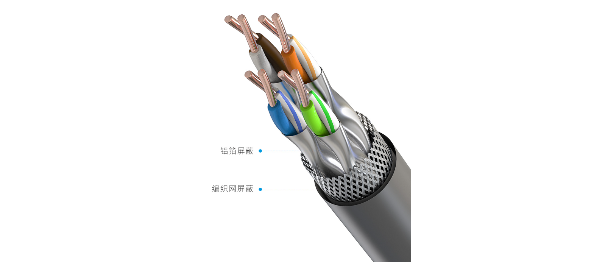
特点：使用双层屏蔽，外层屏蔽减轻了外部磁场对电流的干扰，而加装内层屏蔽是为了削弱线缆内部电流的磁场干扰，因此通信线偏细，电阻高，性能好(不容易出错)，但造价高昂，带宽$1\sim10G$，通量$10\sim 100Mbps$，因电阻高而传输距离仅有100m，并且由于外层屏蔽需要接地，所以安装也相对复杂
半屏弊双绞线
我也不知英文全写是啥😅$ScTP$
特点：相比STP，ScTP舍弃了内层的屏蔽，只保留了最外层的屏蔽，造价更低，电阻更小，但性能和STP差不多，安装时外层屏蔽仍然需要接地
无屏蔽双绞线
$Unshielded~Twisted~Pair,UTP$
特点：最常用的双绞线，舍弃了两层屏蔽，安装便捷，造价低廉，传输距离仍然在100m内，性能仍然和STP差不多，但在磁场干扰的情况下信号可能出错
同轴电缆
$Coaxial$
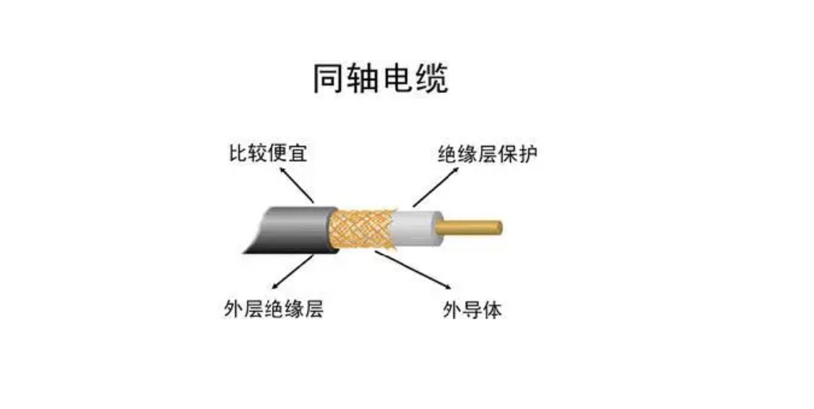
特点：分为粗缆和细缆，由绝缘层包裹铜导体，造价高于双绞线但不算太离谱，通量与双绞线几乎一致，但传输距离更远，可以达到500m，对于粗缆来说甚至可以达到1km
光缆/光纤
$Fiber-Optic$
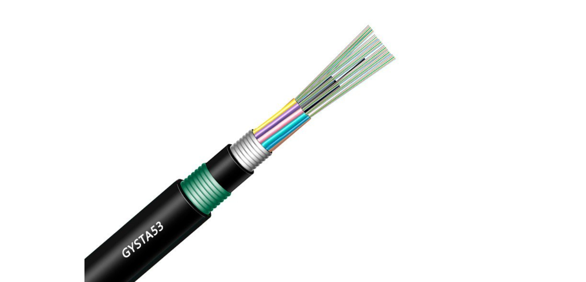
特点：分为单模光纤(axial)和多模光纤，其中单模光纤只能发送单路信号，传输距离更长，能达到3km，一般用于广域网；而多模光纤可以同时发送多路信号(不同路的光信号沿不同角度入射)，传输距离相对更短，只能达到2km，一般用于局域网。在光缆中传输的数据信号不受电磁干扰，通量高于之前的所有线缆，但造价也最为高昂
无线通讯
- 激光，不需要介质传导，但是不能衍射(即不能绕过障碍物)
- 红外线，同样不能衍射
- 无线电波，通过基站和卫星等技术设施发送信号
以太网双绞线(UTP)
通信标准
计算机网络标准主要由五个组织制定，分别是
- $IEEE(Institution~of~Electrical~and~Electronics~Engineers)$
- $UL(Underwriters~Laboratories)$
- $ELA(Electronic~Industries~Alliance)$
- $TIA(Telecommunications~Industry~Association)$
- $ANSI(American~National~Standards~Institute)$
其中ELA和TIA主要制定通信方面的标准
UTP一共有八种分类，其中的三类线是 EIA/TIA568标准(最早的标准) 指定的电缆，传输频率为16MHz，最高传输速率为10Mbps，主要用于10BASE-T(10表示最高传输速率为10Mbps，BASE表示基带传输，T表示双绞线)；而五类线是最常用的以太网电缆，主要用于100/1000BASE-T
线缆分类
按照线缆的不同绕制方式和功能用途可以将线缆分为三类
传输协议
由$TIA$组织制定了T568A和T568B两种标准，指定了双绞线的配线线序规范
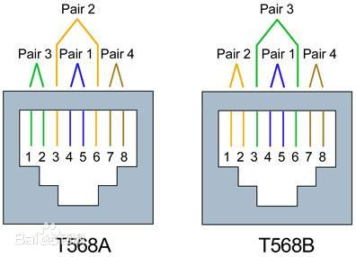
其中T568A标准颜色顺序为：绿白-绿-橙白-蓝-蓝白-橙-棕白-棕
而T568B标准的颜色顺序为：橙白-橙-绿白-蓝-蓝白-绿-棕白-棕
直通线
$Straight~Cable$
直通线是两端采用同一标准的UTP，用于连接PC与交换机、交换机与路由器（但由于现在具有自动反转技术，所以不需要特别区分）
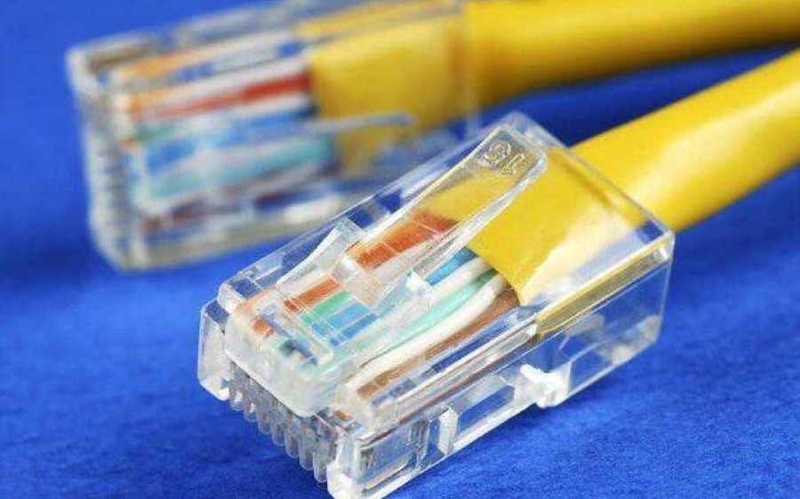
控制台线/反转线
$Console~Cable/Rollover~Cable$
一端是串行接口，一端是RJ45（Registered Jack 45，是用于将计算机连接到局域网的标准化接口，俗称水晶头，如上图所示），特点是数据传输错位，用于通过PC使用超级终端更改设备配置，比特率9600
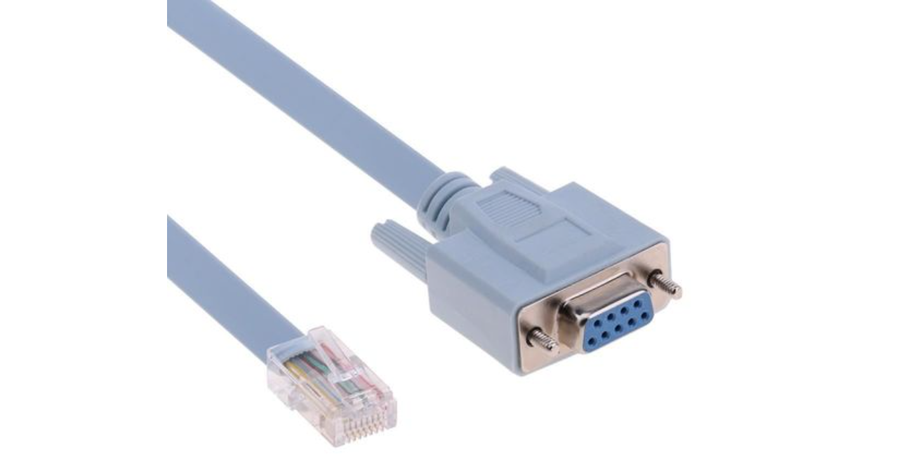
交叉线
交叉线是两端RJ45采用不同标准的UTP，用于连接PC和路由器以及相同设备之间的连接，例如交换机堆叠技术就使用交叉线连接两个20端口交换机使之成为一台共具有38个端口的交换机
传输介质与信号问题
在计算机网络中数据以物理信号的形式传输的过程中有着许多问题，例如：
- 信号的传输需要时间，其中电缆的传输比光缆更快（因为光在光缆中传播需要经过多次反射）
- 传输过程中物理信号的能量会逐渐衰减，因此需要在途中添加中继器/交换机
- 同轴电缆如果发生物理扭曲，则会形成电阻进而积压电压，最终可能导致信号反射，因此需要在终端设备上消耗掉信号，阻止信号的反射
- 环境的噪音可能会使得信号出现错误（失真）
- 信号经过各节点需要经过节点的筛选处理，因此存在设备的时延问题
- 介质访问冲突问题，当两个信号传输需要占用同一段介质时，就发生了冲突(collision)，冲突会导致终端设备认为该介质短时间内不可用，例如如果设备的网卡只接受-1和1之间的信号，而两个终端同时向中间介质发送了-1的信号，电平的叠加会使得这张网卡收到-2的信号，解决的办法是由OSI参考模型中更高层的设备来处理冲突问题。具体地说，局域网的组网需要满足5-4-3-2-1规则（冲突域是指可能发生介质访问冲突问题的设备区域）：最多有5段线路，4个中继器/交换机/路由器，3个放置设备的区域，2个区域不能放置设备，组成共1个冲突域
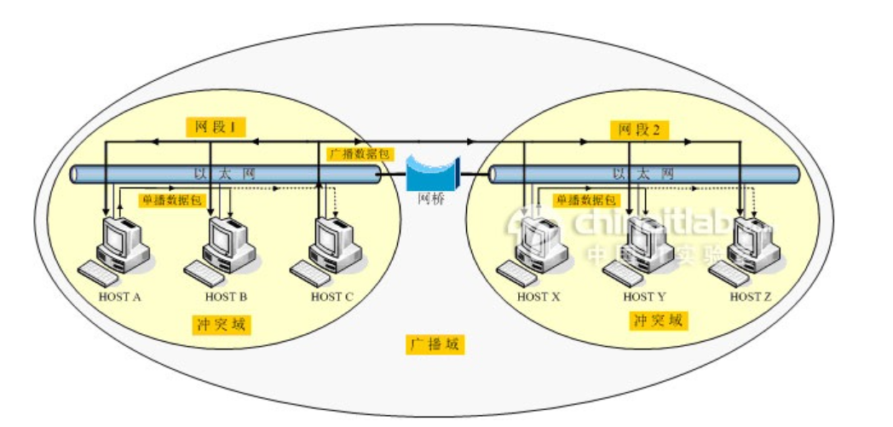
数据通信基础
数据通信的理论基础
基本术语
- 信号(signal)是数据在电气或电磁形式上的表现
- 模拟(analogous)信号是随时间变化而平稳变化的连续波形式（例如无线电波）
- 数字(digital)信号是离散信号，可能包含有限的几个预定值（例如电平的高低）
- 码元(code)是在使用时间域的波形表示数字信号时，代表不同离散数值的基本波形，即时间域内传输的一个单位
信号处理
- 模拟信号可以分为简单信号和复合信号。简单信号(正弦波)不能被分解为更简单的模拟信号；复合信号可以被分解为多个正弦波，即任何复杂信号都可以通过傅里叶分析被简单波组合拟合出来
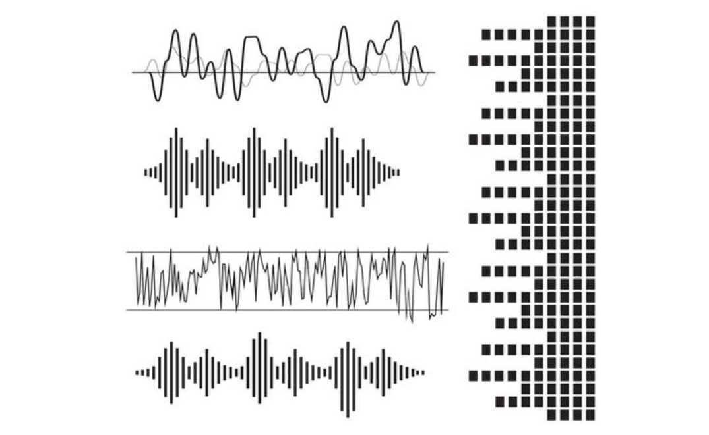
- 数字信号一般是非周期性的，在传输介质上表现为方波（只有高低两个值），一个数字信号可以分解为无数个被称为谐波的不同简单正弦波。在介质上发送数字信号时，本质是发送无穷的简单谐波，如果一些谐波没能成功通过介质传输，则在接收端产生信号畸变，受制于介质本身（带宽受限、噪声干扰、能量损耗等），信号畸变难以完全避免
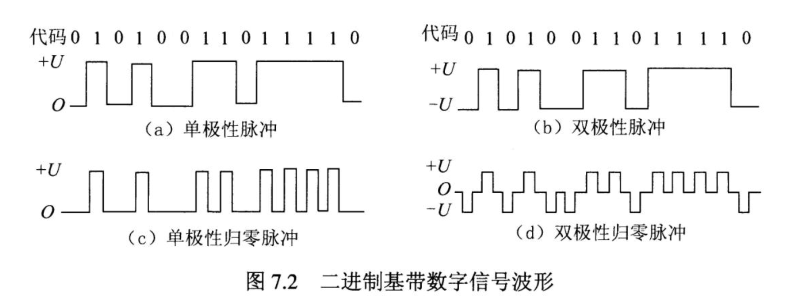
- 信号畸变的堆叠导致信号的失真，失真的严重程度和码元传输速率和信号传输的距离成正比，有的失真程度较轻信号尚可识别，但有的失真会导致数字信号无法识别
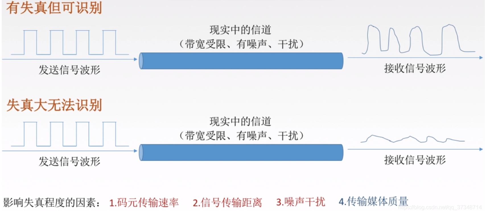
- 理论上无噪声信道的最高传输速率：如果码元传输的速率超出信道的可承受的上限，就会出现码间串扰的问题，导致接收端无法识别信号。1924年，奈奎斯特(Nyquist)指出了无噪声信道中传输比特率的上限为$C=Wlog_2L~bps$，其中W为信道的带宽（以Hz为单位），L表示数据信号电平的数量（如0到8V的电平的码元可携带3个bit），其对数值表示一个码元携带的比特数
- 噪声信道的最高传输速率：香农(Shannon)用信息论推导出带宽受限且有噪声信道的极限、无差错信息传输速率为$C=Wlog_2(1+\frac{S}{N})$，其中S表示信道传输信号的平均功率，N表示信道内部的高斯噪声功率，S/N称为信噪比
- 香农公式的主要意义在于：只要信息传输速率远低于极限信息传输速率，就一定有办法实现无差错的传输；即使信噪比和码元速率都不能再提高，也可以通过编码使码元携带更多比特来提高传输速率
波特率与比特率
- 波特率/调制速率(baud)是指信号每秒钟变化的次数，或每秒钟波的个数
- 比特率(bit)是指每秒钟传送的二进制位数，波特率与比特率的关系取决于信号值与比特位的关系
数据通信技术
数据通信系统基本结构
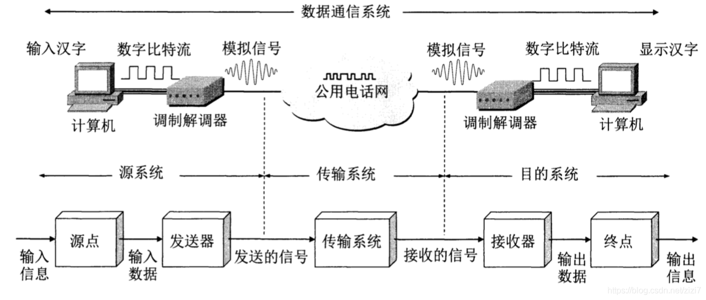
数字信号编码
基带：基本频带，指传输变化前所占用的频带，是原始信号所固有的频带
基带传输：在传输时直接使用基带数字信号，即传输时不将输入数据转换为模拟信号（不调制），是最简单最基本的传输方式，一般用低电平表示数据0，高电平表示数据1，但因为基带信号频率成分很宽，所以对传输线的要求较高且传输容易出错
线路编码
$Line~Coding$，指的是在传输数据前将数字信号转换到模拟信号（调制）后的编码，常用的编码方式如下：
单极性编码
原理是通过网卡对电平进行编码，用0电平代表0，正电平表示1（因为没有负电平所以称为单极性）
问题在于为了分辨连续出现的0或1，发送与接收双方需要进行时钟同步；持续长时间的正电平积累容易损坏设备。因此单极性编码容易出现传输错误
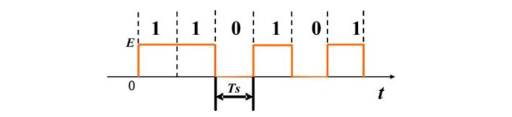
极化编码
不归零电平编码
$NRZ(Non-Return~to~Zero)$，原理是用负电平表示0，正电平表示1（或相反）
问题与单极性编码相似，需要时钟同步，其做法旨在解决正电平的积累问题，但如果0和1长期连续出现仍将导致电平的积累
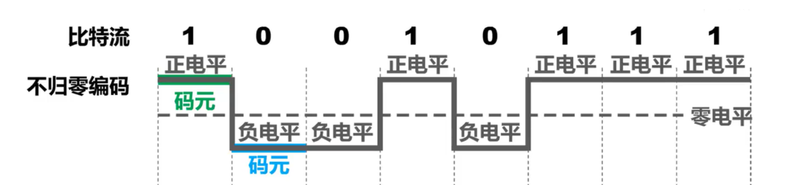
不归零反相编码
改用正负电平的翻转表示1，电平不变化则表示0，时钟同步的问题并没有得到解决，但是连续1的出现不会出现电平的积累
归零电平编码
$RZ(Return~to~Zero)$，原理是用负电平表示0，正电平表示1，在两个比特位之间跳变到零电平
解决了时钟同步的问题（跳变到零电平就是同步信号），并且解决方式相对经济，不容易出错；但电平的积累问题并没有解决，且采用三种不同的电平，占用的带宽增加了
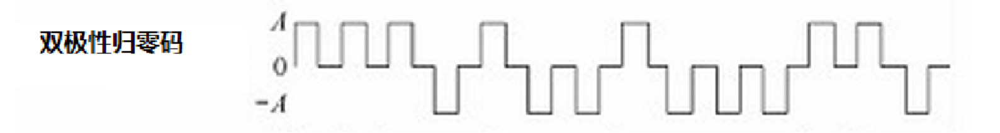
曼彻斯特编码
$\color{red}{Manchester}$，原理是每一位数据都是通过电平的跳变来表示，其中从低电平向高电平跳变表示0，高电平向低电平跳变表示1
好处在于通过跳变完成了时钟同步，不会存在电平积累的问题，并且只使用两个电平（占用带宽少），跳变更少，比RZ编码的效率更高
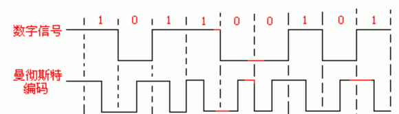
值得指出的是，如果出现两个连续的0或者1，电平会在两个比特之间额外发生一次跳变，为下一次跳变做准备，因此跳变的频率在这种情况下会突然变高，但这个过程并不会影响时钟的同步，因为时钟的同步只是在同步初始相位，而不是各个周期长度同步，周期的长度需要双方提前协商好
差分曼彻斯特编码
$\color{red}{Differential~Manchester}$，原理是通过每一位数据传输开始瞬间的跳变来表示数据，每一位数据传输的中间跳变来同步时钟，其中的数据位用发生跳变来表示0，没有跳变来表示1
好处在于相较于曼彻斯特编码，时钟同步的信息与数据相分离，便于识别与提取
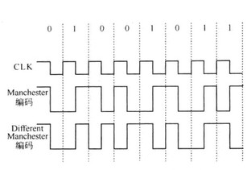
双极性编码
传号交替反转码
$AMI$
原理是与RZ码相同采用正、负、零三种电平，但正电平和负电平都表示1（由于两种极性的电平用来表示同一数据，因而被称为双极性编码），但两者交替出现防止电平的积累
但问题在于对于连续的0仍然无法同步，连续的1则可以同步
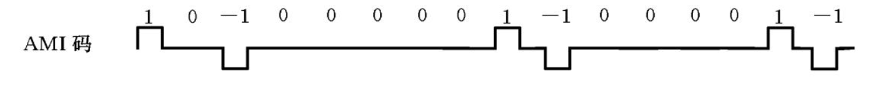
下面的两种编码不做要求
双极性8连0替换码(B8ZS)
3阶高密度双极性码(HDB3)
多路复用
由于一条传输线路的负载能力远超于一个用户传输信号所需要的能力，为了提高线路的利用率，常让多个信号公用一条物理线路，即通过复用器和分解器将一条物理链路划分为多条传输信道
时分复用
$Time~Division~Multiplexing,TDM$
原理是每一个用户周期性地占用线路一段时间，占用的这一段时间称为时分复用帧，TDM信号也称为等时(isochronous)信号，复用的用户在自己的时分复用帧内享有同样的频带宽度
问题在于当使用信道的权限移交至用户时用户可能并不需要发送数据（计算机数据的突发性质），而相应周期预订给用户的时分复用帧不能被其他用户占用，因此会造成线路资源的浪费
统计时分复用
$Statistic~TDM，STDM$
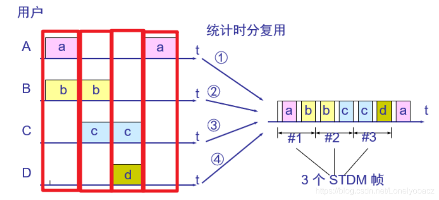
如图所示，统计时分复用将信道的时间划分成了多个STDM帧，然后根据用户的需求，在识别用户身份后给予用户占用相应STDM帧的一部分的权限，但是由于身份识别需要时间，资源仍然有一定程度的浪费（比TDM好得多）
频分复用
$Frequency~Division~Multiplexing,FDM$
原理是将链路的某一段不冲突的频带分配给指定的用户，所有用户在同样的时间内占用不同的频率带宽资源，共享链路的带宽
波分复用
$Wavelength~Division~Multiplexing,WDM$
原理就是使用光作为介质而非微波的频分复用，多模光纤的每一路均可再进行波分复用
码分复用
$Code~Division~Multiplexing,CDM$
码分多址$CDMA(Code~Division~Multiple~Access)$一般用于无线电波
各个用户使用经过特殊挑选的不同码型，非对应的传输双方能收到，但无法理解传输的信息内容，因此对于非对应的终端设备来说相当于白噪音
通信方式
单工通信
信号单向传输
半双工
信号可双向传输，但不同时
全双工
信号随时可双向传输
并行
一次同时发送多位数据
串行
多位数据拆分为多次发送